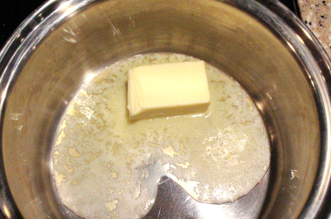
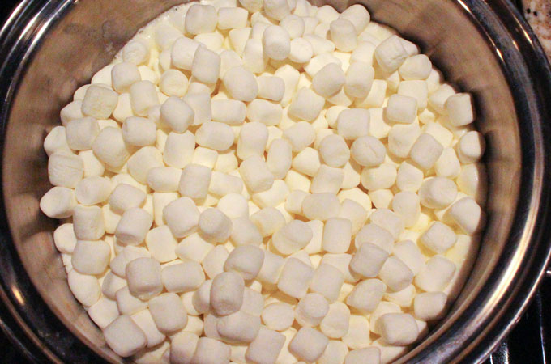
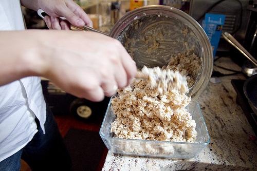
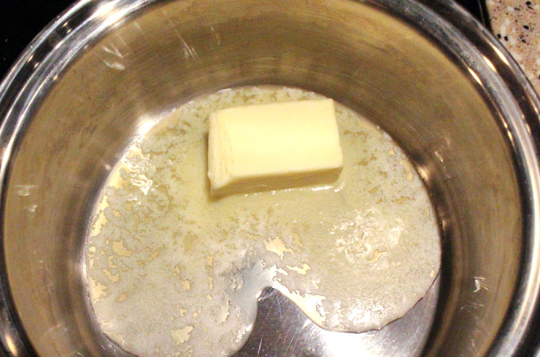
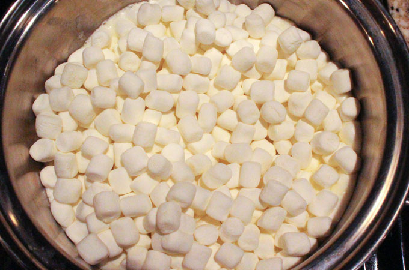
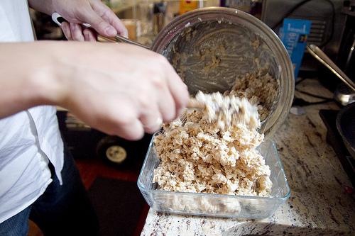

How Each Step Should Look
| STEP 1 | STEP 2 | STEP 3 & 4 | STEP 5 | |
|---|---|---|---|---|
|  |  |  |
 |
| STEP 1 | STEP 2 | STEP 3 & 4 | STEP 5 | |
|---|---|---|---|---|
|  |  | |
 |
I hope it is easy and fun for you to make these treats.
Here's a quote about rice cripy treats from my own mother who made them for me all the time.
These treats are fun and easy to make, and they make the kids smile. Who wouldn't want to make them?